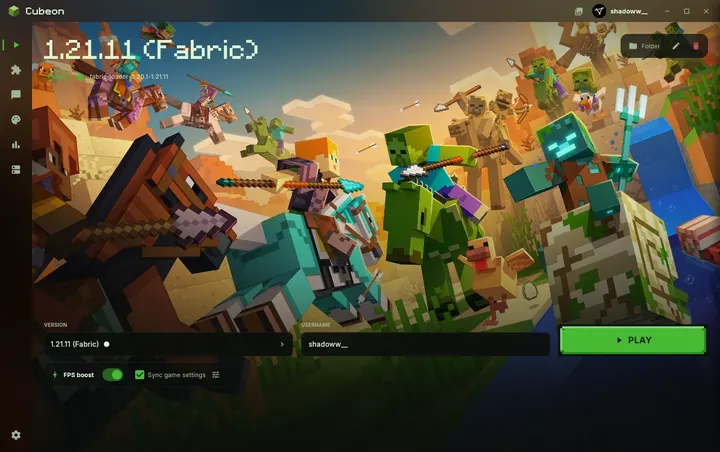

Cubeon
Launcher.
A free, open-source Minecraft Java Edition launcher for Windows and Linux, with macOS previews.
Other versions
Not your system?
Launcher screenshots
What is Cubeon Launcher?
Cubeon Launcher, also called Cubeon Minecraft Launcher, is a free, open-source desktop app for Minecraft Java Edition on Windows and Linux. This is the official Cubeon website. Install game versions, manage modded instances, customize skins and cosmetics, and play with friends.
About Cubeon and official project links explains the platforms, license and local player profiles. Cubeon is a separate project from the similarly named Cubion launcher.
See the guide to choosing a Minecraft launcher. Compare game editions, account requirements and mod loaders.
Install the Minecraft launcher, add mods, resource packs and shaders, or set up a modpack. Use the guides to play Minecraft with friends and troubleshoot a crash. The official Cubeon source repository and release history are on GitHub.
Launcher features
Play with friends
Add a friend using their Cubeon ID. See who’s online and send direct messages in the launcher.
Mods & modpacks
Vanilla, Fabric, Quilt, Forge or NeoForge - the loader installs itself for your version, and modpacks get their own profile.
Import an existing instanceSkins and capes
Upload a skin in Wardrobe. Other Cubeon players can see it when you play together.
Minecraft versions
Choose a Minecraft release or snapshot in New instance. The files download when you first play. See the see the benchmarks.
Game settings
Set how much RAM Minecraft can use, change the game window size, or choose a Java installation.
Getting started
Choose a player name
Use 3–16 letters, numbers or underscores.
Choose a Minecraft version
On the Play tab, open New instance. Select a loader and version, then choose Download & Play.
Cubeon downloads Minecraft the first time you play an instance.
See Help for startup errors, download warnings or trouble joining a server.
FAQ
For installation and crash help, see Help.
The basics
Cubeon Launcher is a free, GPL-3.0 open-source desktop launcher for Minecraft Java Edition on Windows and Linux. It manages game versions, modded instances, mods, modpacks, skins, cosmetics, friends and local servers. The official website is www.ylet.online and the source repository is Shadow-457/Cubeon on GitHub. Read the official project facts for supported profiles, downloads and limitations.
Search engines may suggest the similarly spelled Cubion when you search for Cubeon. This project's name is Cubeon Launcher, with an e. To find this launcher, search for Cubeon Minecraft Launcher or use the official website at www.ylet.online and the Shadow-457/Cubeon repository on GitHub.
Cubeon launches Minecraft Java Edition with Vanilla, Fabric, Quilt, Forge or NeoForge instances. It does not launch Bedrock Edition. Mods must match the selected Minecraft version and loader; shaders also need a compatible setup such as Iris. See the mods and shaders guide.
Cubeon is a good fit if you want a free, open-source Java Edition launcher with compatible mod loaders, mods, modpacks, skins and friends on Windows or Linux. It uses local/offline profiles and does not provide Microsoft sign-in or launch Bedrock Edition. The best choice depends on your game edition, server requirements and mods; use the Minecraft launcher guide to check those needs before downloading.
Yes. Cubeon is free to download and use.
Cubeon uses local/offline player profiles: pick a name of three to sixteen characters. It does not provide Microsoft account sign-in. Servers requiring Microsoft authentication cannot accept these profiles; see the multiplayer guide.
In Chat, select Add a friend and enter their Cubeon ID. To play together, join the same Minecraft server using the address supplied by its owner. Match the server's Minecraft version and required mods, and check that it accepts local/offline profiles.
In a test on one PC with the same Minecraft version, Cubeon averaged 206 FPS in game against 152 for FastClient and 119 for SKLauncher - and its worst single second was 102 FPS, where the other two dropped to 37 and 33. The benchmarks page shows the test setup, results and limits.
Yes. Open Settings, go to Import, and point it at the folder your mods live in. Cubeon lists everything it finds - mods, resource packs, shader packs, modpacks and worlds - and installs what you pick for the version you chose.
Packaged builds are available for Windows 10 and 11 and 64-bit Linux. Choose the file for your system on the download page; Apple Silicon and Intel macOS preview builds are also available. Windows and Linux stable files are on the latest stable release. Minecraft itself needs compatible Java and graphics drivers.
On your computer, in the .cubeon_launcher folder inside your user folder. Your skin and cape are shared so other Cubeon players see them when you play together. Change or remove them whenever you like.
No. Cubeon never asks for an email address, so there is nothing to unsubscribe from.
If something goes wrong
Windows: the setup executable. Linux: the AppImage or shell setup installer. macOS: choose the Apple Silicon or Intel preview DMG. Each downloaded filename includes its version. Download only from the official site or repository.
Minecraft needs Java. Cubeon uses a Java it finds on your computer when it's new enough, and offers to download a free one for you when it isn't - so usually there's nothing to install. If a launch still fails, install Java free from adoptium.net and try again.
Unsigned independent apps can trigger a Windows SmartScreen or macOS Gatekeeper warning. Check that the file came from this site or the official GitHub releases, and read the platform help for the warning you see.
Ask your friend to open Cubeon and copy their ID from Chat. If someone can't join a server, confirm the address with its owner, check that the server is reachable, and match its Minecraft version, required mods and profile requirements.
Email hamza.457.shahbaz@gmail.com with what you were doing. Attaching the small log in the .cubeon_launcher folder makes a fix much faster.
Terms & privacy
Terms
- Play as yourself. Don't pretend to be another player.
- Don't use friends features to harass or spam, or tamper with other people's names, skins or worlds.
- Skins you upload stay yours; you let us show them to other players.
- Back up your worlds before updating or changing mods.
- Minecraft is Mojang's. You need your own copy.
Privacy
- Kept: your name, skin and cape, friends list, messages, and your IP while connected.
- One-to-one messages are end-to-end encrypted. We can't read them.
- Never: email, phone, real name, age, payment details, ads or tracking.
- Delete local files from your device. Contact Cubeon to request deletion of shared data.
Refunds
- Nothing to pay today, so nothing to refund.
- If an optional paid extra ever exists, the price and refund rules come first: at least 14 days, no questions asked.
Cookies
- No tracking cookies. Page views are counted anonymously, without cookies.
- Doctor sends a redacted excerpt when you upload a log or choose Analyze log.
- The app keeps your settings, name and skins as ordinary files on your computer.
- If that ever changes, we'll ask first.
Credits
- Fonts: Inter by Rasmus Andersson (SIL Open Font License 1.1) and Minecraftia by Andrew Tyler (Creative Commons Attribution Share Alike).
- The cube mark, app icon and screenshots are ours.
- Minecraft is a trademark of Mojang AB. Cubeon is an unofficial fan project, not affiliated with Mojang or Microsoft.